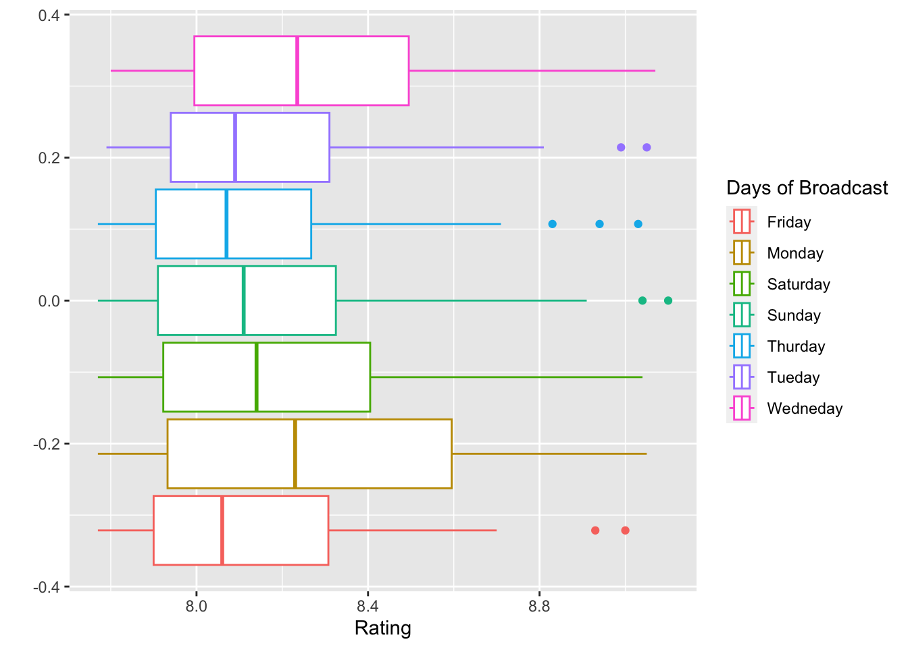
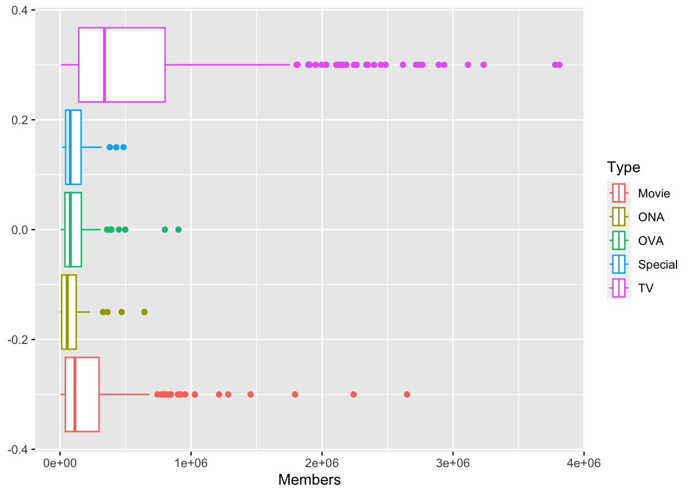

Anime Alchemy
Introduction
The term “Anime” refers to all animated motion pictures that are produced in Japan. This is a booming industry with an ever-increasing audience and rising popularity. Naturally, this becomes an excellent opportunity for studios to make massive profits and an exciting field for one to study.
Anime Alchemy is a data visualization app that helps you analyze and compare the performance of various Anime series with several variables that define them. This application aims to help producers develop the best broadcasting and advertising model to ensure the success of their new program.
However, before diving into the application, we should first understand and explore the data set.
Data
The data set we will be using for our analysis comprises the top 1000 Anime shows on the website MyAnimeList. We shall talk more about scrapping the data set in a later section.
As mentioned, the data set comprises 1000 observations described using 38 variables. We can divide these variables broadly into two categories: numerical and categorical.
Numerical Variables:
These are the columns of our data set that have numerical values associated with them—for example, rating, number of likes, active viewers, etc.
These variables help us mathematically analyze the performance of several substrata of data points. Here is a brief description of all the columns that we have used in our analysis:
- Rating (Score):
This is the average rating given to the show by everyone who rated the show. An important thing to note is that a high rating need not imply a more extensive audience size or popularity. The reason is that ten people can rate one show to be 9/10. However, another show might be rated by 100 people with a rating of 8.5. As a producer, you might favor the latter over the former.
- Number of Votes:
This is the number of votes the show received on the website in a poll where users were asked about their top 10 favorite anime shows.
- Number of Favorites:
This is the number of users who have marked a particular show as one of their favorites on the website.
- Number of Active Viewers:
The number of people have watched over ten episodes of one particular show. Note that it is essential to distinguish between a viewer who has simply watched a single episode of a show and one who continuously watches the show. As a producer, we are primarily interested in the latter category predominantly.
- Number of Episodes:
The number of episodes per season for a particular show.
- Duration Per Episode:
The average duration per episode for the show.
(NOTE: Variables 5 and 6 are often used as grouping variables to analyze what range of episode number and duration sits well with a particular target audience.)
- Color Composition:
We analyzed the posters for all the shows and studied the color composition of all the posters regarding their percentage RGB composition. We stored these values in separate columns to use as both grouping parameters and analysis parameters to explore various questions of possible co-relations between poster color composition and other parameters.
Categorical Variables:
These columns of our data set have non-numerical values such as names, seasons, origins, etc. We’ve used these values as grouping parameters to subset our data and observe various trends that emerge in such observations. Here is a brief description of all the groups that we have used:
- Source:
Every anime has a source from which it is inspired. For example, we have “One Piece” inspired by Manga. Similarly, other sources may include games and comics; some might be original works.
- Genre:
The genre of the show. It has categories like action, adventure, drama and comedy.
- Season of Premier:
What season of the year was the anime premiered in? For example, it is a common understanding that shows meant for children perform better when released in summer. This is because many children are eager to consume TV content during their vacations.
- Day of Telecast:
The day of the week on which the show is telecasted.
- Target Demographic:
The age section of the audience that the show is aimed at. For example, an anime series like “Shin-chan” is targeted toward a younger audience than compared to a series like “Full Metal Alchemist.”
- Censorboard Rating:
The age group that the censor board of Japan deems the show safe for.
Obtaining Data
The data is scrapped from the websiteMyAnimeList.
The essential steps in our data preparation and cleaning are as follows:
The
rvestandtidyverselibraries contain the scrapping functions, so they were first called at the beginning of writing the code. Thestringrlibrary came to our rescue as it helped remove any extra white spaces into a single white space.With the help of running loops in
R, we iterated to multiple sub-web pages of the website by changing the limits to an increment of 50. Multiple website links were stored in a vector namedlinks, and additional essential elements were extracted.To store the essential data elements required for data analysis, we had to name many dummy variables and iterate them over loops of the sub-web pages, thereby replacing their garbage value with the scrapped information from the website. Helpful functions such as
gsub,grepl,sapply,substring,paste,strsplit,str_squish, andtrimwsmade our data-scrapping task less challenging.gsubfunction replaced all occurrences of patterns in character vectors with pre-specified replacements.greplfunction checked for the presence of patterns in character vectors. It returned a logical vector indicating patterns in each element.ssapplyfunction was applied to a function to each element of a list or vector and simplified the result.substringfunction was used to extract or replace sub-strings from a character vector.pastefunction was used to concatenate multiple strings into a single string.strsplitfunction was used to split a character string into sub-strings based on a specified delimiter.str_squishfunction removed leading, trailing, and repeated white space characters from a character vector.trimwsfunction was used to remove leading and trailing white-spaces (including spaces, tabs, and newlines) from character strings.
The data columns were converted to their correct types. For example, numeric real-valued data was converted to numeric type.
Many incorrect entries in columns related to theme, demography, and genre with the format “ExampleExample” were converted into “Example”.
To calculate the airing duration between anime shows,
difftimefunction was used. The ith element of paired columns was imputed in its function parameter with the difference unit in week rounded up to 2 decimal places.We changed the value “None found, add some” to NA in the Licensor column.
Finally, with the help of the data.frame function, all the scrapped columns were bound horizontally and stored in an anime_df variable.
Biases in Our Data
Non-Uniform Distribution of Observations
An important thing to note about our data set is that the number of observations we have for each subcategory is not uniform. For example, consider the “Genres” column. Here is a plot for the distribution of observation across the top 5 genres.
We can observe that the “Action” genre contains the most data points, almost half of the entire data set. Hence, for any conclusion we make from the data based on the graphs where action comes out to be the most popular or most liked genre, we need to factor in this confounding variable of the number of observations.
Hence, most of the analysis we present in our shiny app is on data subsetting to the user’s needs. Also, we provide quantile analysis through box plots and base our conclusion on averages rather than the face value of data to mitigate the effect of such confounding variables.
We can further substantiate the argument by the following plot:

The plot clearly shows that the actual number of people who consider a particular anime to be their favorite has little correlation with the average rating that the show has on the website.
Subjectivity in The Observations
Anime, or any form of artwork for that matter, is subjective. It is challenging to analyze the trends in the observations because there are so few. The “likability” of a show is impossible to pre-determine, and neither is the goal of this project. We strive to analyze the patterns in consumption by the masses that can be extrapolated and used to ensure the optimum reception of our product.
However, we can assume some form of correlation between factors such as ‘Number of viewers’ and ‘Number of Favorites’ as illustrated below:
Key Questions
The primary aim of our analysis is to help curate an optimum broadcasting and advertising plan for a show that the producer wants to release. Here are some of the questions that help us explore this concept:
What season should you release the anime in?
- Does the viewership actually increase during summer time?
What day of the week should you broadcast the anime?
During Weekends (Saturdays, Sundays)
Just before the weekends (Fridays)
Do week days perform better?
How many episodes should there be per season?
What should be the color composition of your poster?
What is the RGB composition for posters of various genres?
Do action posters have a higher red color composition?
Can we also present claim “Mystery” genre anime to have “Darker” posters?
For a particular audience, what anime genre performs the best on an average?
- One might assume that Manga performs better on average for a target audience of young adults. However, for a younger audience such as 5-10 year-old children, originals like “Shin-Chan” and “Doraemon” might perform better. Is this actually the case?
Which studio has the best performance average?
Key Visualizations
Airing/Premiere Time
In the following plot we can actually observe that the average number of viewers dipped for the shows that were released during the summer months. This is an interesting observation that is counter-intuitive to our original line of thought which was to assume that viewership increases during summers.
Another reasoning can be the fact that this data is collected from users residing in various countries. Hence, the lengths and the time of the year where these viewers usually enjoy their vacations might be different. Hence, we do not observe a clear trend.
Let us try and find similar trends in the day-of-week variable.
As Illustrated below, we don’t see a clear trend when we analyse the totality of the data set. However, when we generate a similar plot for a subset of choice, then a trend might emerge, our Shiny App allows for that.
Another reasoning for a lack of trend might be the fact that a good chunk of people often do not consume anime episodes on the day they were aired. Rather, they watch these episodes at their leisure on repeated telecast and recordings. Hence, we might not get a very clear trend.
However, a fun bit of analysis that we can do to make the same plot as before but with the value points as “Rating” instead of “Viewers”. Here we can observe that Monday and Wednesday have much higher average “Likability” as compared to other days. Our reasoning for this is that people are extremely tired on these particular days and are refreshed by their favorite show, hence tend to give a higher score. However, as mentioned before, this is just a goofy analysis and a clear causation for the trend is not definite.

Number of Episodes per Season
We could not obtain a clear trend between the number of episodes per season and either of the success parameters (“Rating”, “Number of Viewers”, etc.)
This was the only variable where we did not expect a clear trend and we got none.
Color Analysis of the Posters
Let us first try and analyze the hypothesis that “Action” genre anime tend to have a greater red color composition.
We do not obtain a clear trend here for a simple reason. Our estimate for red composition numerically has a bias. Even pure white would be registered as having a high red composition. Hence, this analysis is flawed. To obtain a simpler analysis we consider Dark and White theme analysis on the posters.
Here, we can observe interesting trends. For example the “Mystery” genre seems to have darker posters at at average (Just like our assumption). While the comedy genre has lighter posters. This enables us to think more on the lines of how light and dark colors affect our psychology and how this fact may be exploited to create a greater demand for our product.
Mode of Telecast
Now let us see another diagram. The following BoxPlots are comparing the average rating of anime grouped across various airing types.

From the diagram above it is evident that TV amasses the largest crowd when it comes to Anime broadcasting. This is perhaps due to TV being the traditional airing platform for Anime and the audience having developed a sense of comfort with the same. However, the data does not take into account the fact that some shows are also aired on OTT platforms and uses the umbrella term of ‘TV’ for such shows as well. Hence, it is crucial to know that these platforms also offer a great audience, however, they are not in the scope of our analysis.
Audience Vs Genre Popularity
A natural question that we want to answer is the question of which genre performs the best in various target demographics. And the analysis for the same is present below.
We can do a similar analysis but this time with the “Average Viewership” as the criteria. The previous graph tells us more about the “Likability” of a particular genre and this graph gives us a more detailed analysis on how many people would actually end up watching our program should we choose the most popular genre.
Studios Vs Popularity
We also analysed the performance of the top Anime production studios to compare their average viewership over the course of last 10-20 years. Here we observe that “Bones” has the highest average viewership, they are the producers of “Full Metal Alchemist”, the number one performer on our list, and the popular series “My Hero Academia”.
Analysis from the Shiny App
Our Shiny App is designed to allow the user to create multiple subsets of the data that we have collected and observe the trends that we have discussed above for that specific chunk of data. For example, we illustrate a graph that illustrates the composition of shows currently airing targeted at the juvenile audience.
We can clearly see that most of the shows in the market belong to the comedy genre.
Conclusion
Concluding this project, we built an app that would help us make different templates of the preferred combination of various characteristic variables (genre, broadcast day, release season, duration per episode, etc.) to ensure the best response to the new show statistically.
We understand that no specific combination of the parameters mentioned above would guarantee success for our product. Like most other art forms, anime is highly subjective, so audience perception would differ. However, we analyzed trends in the data that help us exploit natural factors like when people are free and when people like to consume entertainment-based content.
While analyzing the data in its totality, we came across many exciting trends:
There is no clear trend in the average number of viewers for a show regarding which season the anime was released. Adding to that, we observe that the average number of viewers for shows released during the summer months is slightly lower!
We found a similar lack of trend in the “Day of the Week” analysis. From this, we concluded that many people actually watch these shows at their leisure, and hence, the release season or airing time doesn’t play a key role in their perception amongst the masses.
The “Light and Dark” theme analysis of the posters illustrated how the “Mystery” and “Action” genres have darker posters, and the “Comedy” genre has the lightest posters on average. This shows a correlation between the genre and the mood of the poster since the trend is intuitive. We can conclude that there is a link between a particular genre and the spirit it wants to instill and the color composition of its poster.
We observe that TV continues to amass the largest number of viewers and stated that this number is cumulative of traditional TV and other OTT platforms. Hence, we can conclusively say that airing a show on TV ensures the best chance at a larger audience.
This project gives us great insights into the world of Anime. Exploring this universe helps us understand how various population strata react to multiple entertainment content genres and how to optimize the broadcasting and advertising for any product we want to launch in the market.
References
Fundamentals of Statistics (Volume One); A.M.Gun, M.K.Gupta, B.Dasgupta; The World Press Pvt. Ltd., 2019.